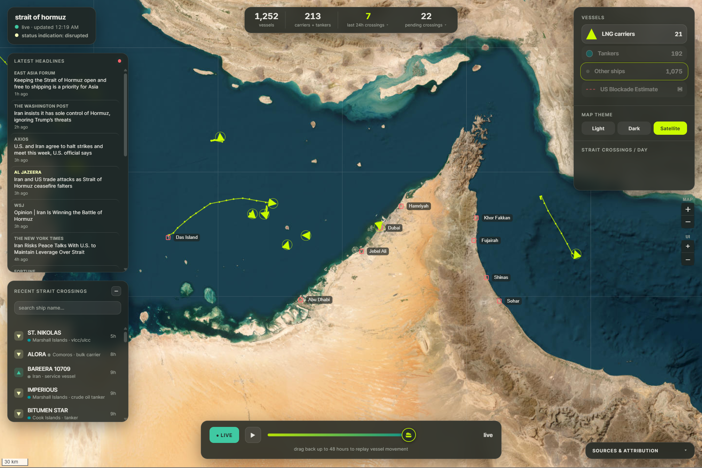

Data & statistics · energy sector
The business insights hidden in your data.
I turn large, messy datasets into decisions a board can act on. Energy demand, market risk, forecasting. Built on solid data practice from the ground up.
I find the signal and make it obvious.
Hormuz Tracker
The insight
A simple ship count through the Strait of Hormuz can miss a disruption to oil and gas entirely. Tankers and LNG carriers get held up while ordinary traffic keeps the total looking normal. So the tracker follows the tanker and LNG fleet on its own. When that segment thins out, it's an early warning on energy supply, and on the price risk that comes with it.
A live map of ~1,300 vessels across the Persian Gulf and Gulf of Oman. It classifies each ship, watches the tanker and LNG segment, and rolls it up into one strait-status signal: is energy trade flowing, or under stress?
